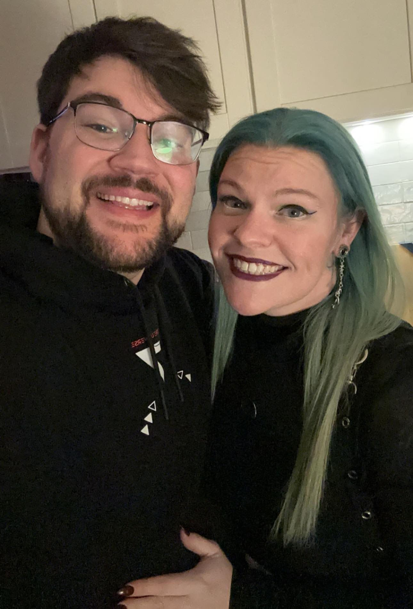
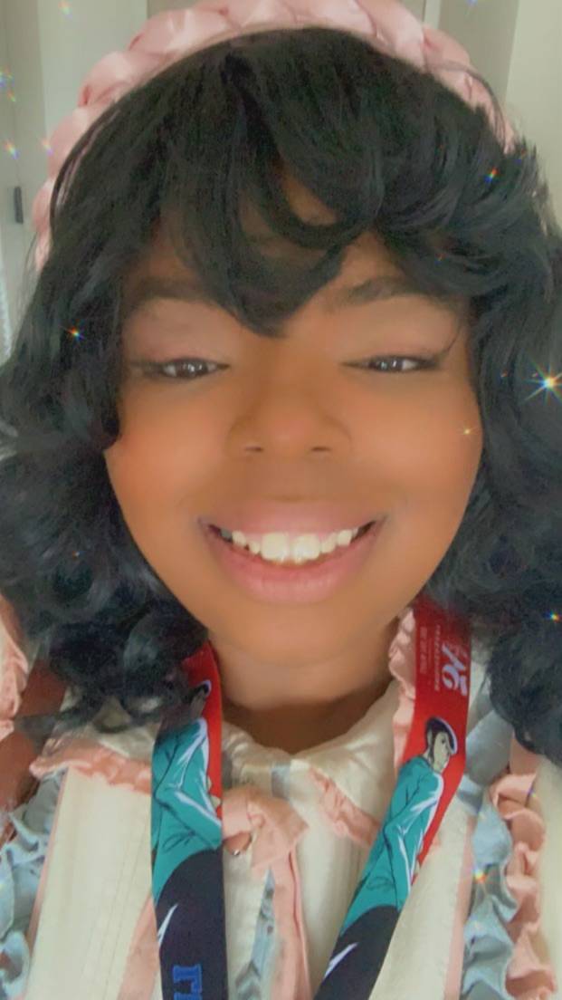
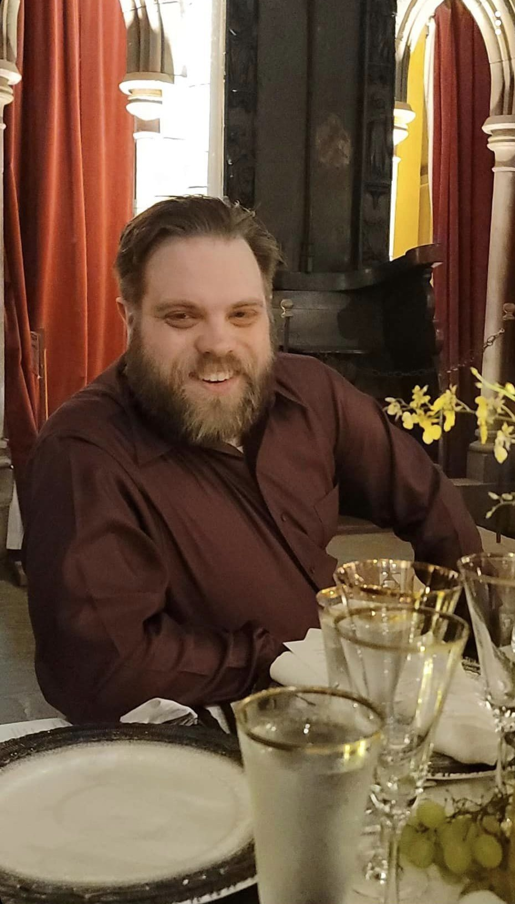
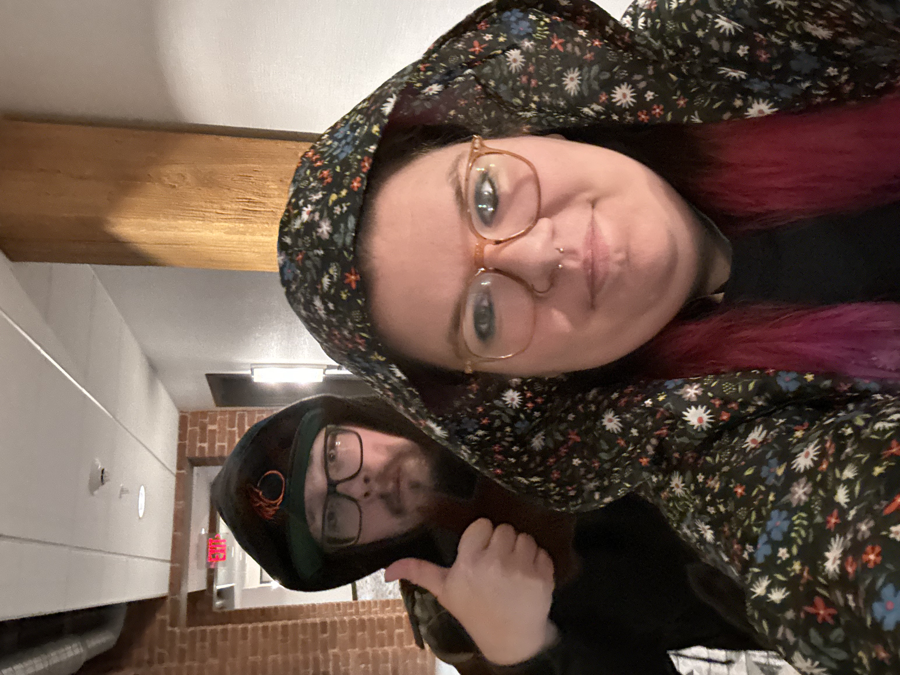

Pax East
This year I was lucky enough to get to attend pax east a gaming convention as part of an up and coming social media team. With this amazing opportunity I was able to experience a different side of the gaming industry all of which led me to this capstone project where I decided to look at how gaming companies from indy to AAA used social media to market their games and products. As well I'm going to walk you through the creative process of our social media team creating content for Heavy Play, a company in their first year of business in the collectible trading card game industry.
What is Pax ?
PAX is a celebration of gaming and gaming culture that takes place annually in Boston, Seattle, Melbourne, and Philadelphia. Featuring thought-provoking panels, a massive expo hall filled with the best publishers and studios, new game demos, musical performances, tournaments, and a community experience unlike any other.
Meet Kundy Media
Kundy Media is a nerdy group of friends who venture adulthood well still showing our inner child. we currently have 351.4k followers. let's meet the team
   